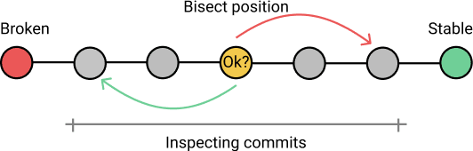

Отладка кода с Git: 3 инструмента для поиска ошибок
Отfurrycat
-
29.06.2018
3229
Отладка кода и устранение ошибок – неотъемлемая часть работы программиста. Git предлагает 3 инструмента, чтобы сделать процесс проще.
При работе над большим проектом, в коде частенько появляются ошибки, которые мешают дальнейшему развитию. Их необходимо найти и исправить.
Можно просматривать всю историю изменений вручную, но это долгий и утомительный процесс. К счастью, Git предлагает несколько инструментов, которые можно использовать для поиска ошибки и ее виновника.
Git Blame
$ git blame <file_path/file_name>
Если известно, какая именно строка кода привела к появлению ошибки, можно воспользоваться командой git blame. Она поможет найти коммит, создавший эту строку. Также Git определит автора изменений, у которого можно будет запросить дополнительную информацию о коде.
Для ограничения диапазона строк, нуждающихся в анализе, существует опция -L.
$ git blame -L 11,21 new_file^95d69a196b5c7 (Jhon Smith 2018-05-18 13:04:22 +0200 11) def new^95d69a196b5c7 (Jhon Smith 2018-05-18 13:04:22 +0200 12) @article = Article.new^95d69a196b5c7 (Jhon Smith 2018-05-18 13:04:22 +0200 13) end3171aa2dbbce7 (David Smith 2018-05-16 18:21:30 +0200 14) def edit3171aa2dbbce7 (David Smith 2018-05-16 18:21:30 +0200 15) @article = Article.find(params[:id])3171aa2dbbce7 (David Smith 2018-05-16 18:21:30 +0200 16) end^95d69a196b5c7 (Jhon Smith 2018-05-18 13:04:22 +0200 17) def create3171aa2dbbce7 (David Smith 2018-05-16 18:21:30 +0200 18) @article = Article.new(article_params)^95d69a196b5c7 (Jhon Smith 2018-05-18 13:04:22 +0200 19) if @article.save^95d69a196b5c7 (Jhon Smith 2018-05-18 13:04:22 +0200 20) redirect_to @article^95d69a196b5c7 (Jhon Smith 2018-05-18 13:04:22 +0200 21) else
Эта команда выведет информацию о строках с 11 по 21 файла new_file. Первой идет неполная сумма SHA-1. Она соответствует тому коммиту, который последним изменял строку. Также указан автор и дата изменения. Префиксом ^ отмечены те строки, которые не изменялись с самого начала проекта.
У команды также есть опция -C, которая позволяет выяснить, откуда были скопированы фрагменты кода. Вне зависимости от проведенного рефакторинга, она обнаружит оригинального автора.
$ git blame -L -C 11,21 <file_path/file_name>
Команда git blame очень полезна, если известна причина проблемы. Но иногда совершенно непонятно, как вернуться к рабочему состоянию сломанного кода. Здесь в игру вступает git bisect.
Git Bisect
Git bisect — это инструмент отладки, который используется для определения причины ошибки. Выполняя автоматический двоичный поиск, он находит конкретный коммит-виновник. Но изначально неизвестно, какой именно файл проекта содержит баг.
Если непонятно, что сломалось, а с момента последнего стабильного состояния уже сделано много изменений, стоит обратиться за помощью к git bisect.

Команда git bisect делит дерево коммитов на «хорошие», в которых нет багов, и «плохие». Основываясь на результатах тестов, Git перемещается по последним фиксациям, идентифицируя каждую из них, пока не найдет преступника. Этот процесс известен как алгоритм бинарного поиска.
Если ошибок несколько, следует выполнить двоичный поиск для каждой из них.
Отладка с git bisect
1. Прежде всего, нужно запустить режим бинарного поиска командой $ git bisect start.
2. Теперь необходимо найти коммит, в котором программа еще работает правильно. Его можно выбрать из истории изменений с помощью инструкции $git log --oneline.
Опция --online обеспечивает компактный вывод.
$ git log --onelinef11c599 Removed unnecessary lines95d69a1 Added article tests3171aa2 Enabled editing articles95d69a1 Added articles
|
1 2 3 4 5 |
f11c599 Removed unnecessary lines |
3. Последний хороший коммит нужно отметить, используя команду $ git bisect good 95d691.
4. После этого необходимо найти «плохое» изменение. Тогда git сможет разделить дерево коммитов и применить алгоритм бинарного поиска. Точно известно, что последняя фиксация кода содержит ошибку, значит, ее можно назначить «плохой».
$ git bisect bad f11c599
5. Теперь, когда начальный и конечный указатели расставлены, Git пройдет по всем коммитам между ними. Каждый из них нужно будет протестировать и отметить как «хороший» или «плохой».
6. Процесс продолжается до тех пор, пока не будет обнаружено первое «плохое» изменение. После этого можно выйти из режима бинарного поиска, введя $ git bisect reset.
Git Grep
$ git grep
Команда git grep дает возможность быстро и эффективно искать по шаблону, заданному регулярным выражением. Поиск производится во всех файлах проекта, кроме тех, которые указаны в .gitignore.
Аббревиатура GREP расшифровывается как Global Regular Expression Print (глобальный поиск и вывод строк, соответствующих регулярному выражению).
Дополнительные опции
Удобная отладка
Если известно, где прячется ошибка, ее можно локализовать с помощью git blame. Однако, если в репозитории много коммитов и большая история изменений, стоит обратиться к git bisect.
Строку или регулярное выражение в проекте легко найти, используя git grep.
Отладка кода с этими тремя git-инструментами становится намного проще.
Перевод статьи Nesha Zoric: Debugging with Git
Другие материалы по теме: